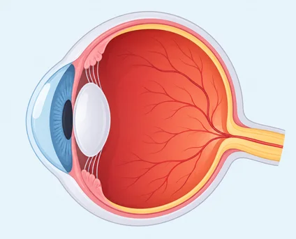
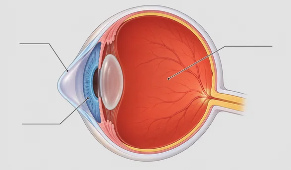
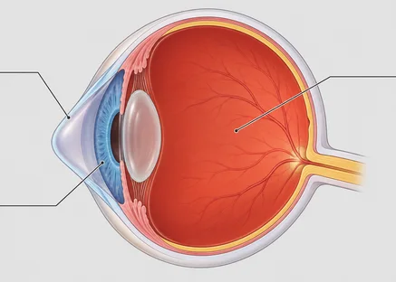
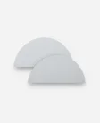
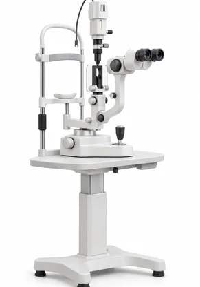
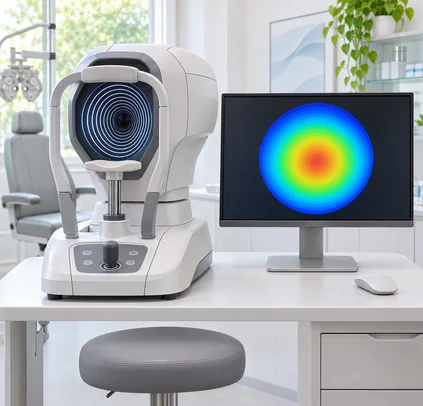

Keratoconus Keratoconus Keratoconus
원추각막증이란?
원추각막증은 각막의 일부가
점점 얇아지면서
앞쪽으로 돌출되며
시력이 떨어지는 진행성 질환입니다.
부정난시가 생기거나 안경으로
시력이 충분히 교정되지 않을 수 있습니다.
오래 내버려 두면 실명에 이를 수도 있습니다.
normal abnormal

정상안

원추각막증원추각막증의
발생원인과 주요 증상
발생 원인
원추각막의 원인은 아직 뚜렷하게 밝혀지지 않았습니다.
타고난 유전 소인과 환경 요인, 영양 불균형 등이
주요 원인으로 꼽힙니다.
또 습관적으로 눈을 비비는 것도 원추각막의 원인이 될 수 있습니다.
특히 알레르기 비염, 결막염, 아토피 피부염이 있는 분은
무의식적으로 눈을 비비는 습관은 각막에 부담을 줄 수 있어
눈을 비비지 않도록 주의해야 합니다.
-
01
유전적 요인
-
02
아토피 등
전신 질환과의 관련성 -
03
눈 비비는 습관
-

04콘택트렌즈 부작용
-
05
시력교정술 부작용
주요 증상
주로 청소년기에 많이 발생합니다.
원추각막은 성인기에 서서히 진행할 수 있으며
진행하다 멈추기도 합니다.
증상 초기에는 시력도 정상이고
특별한 증상이 없을 수 있습니다.
질환이 진행되면서 대비감도가 떨어져
가까운 곳과 먼 곳을 볼 때 모두 불편해질 수 있습니다.
각막 모양 변화가 심해지면 얇아지고 돌출될 수 있습니다.
불규칙 난시가 있으면 시력 저하나 왜곡, 눈부심, 번짐, 복시 등
여러 증상이 나타날 수 있습니다.
급성 원추각막이 생기면
시력이 짧은 기간에 크게 떨어질 수 있습니다.
원추각막의 진단 방법
각막 지형도 자료로 표면의 굴곡을 살핍니다.
진단할 수 있으며,
특징적인 소견을 발견하면 추가 검사로 진단을 확인합니다.
-
1
세극등 검사
안과에서 기본적으로 하는 검사로
각막을 현미경과 같이 확대해서
형태와 소견을 관찰한다. -
2
검염법 검사
자가 검안경을 통해 눈의 굴절값을
빛띠의 모양은 각막 굴곡과 검사 방식에 따라 달라집니다.
각막 반사에서 두 개의 반사가 관찰되고 불규칙 난시가 있으면
교차하는 가위반사가 나타날 수 있습니다.
-
3
각막지형도 검사
머리를 고정한 뒤
검사 장비의 중앙을 바라보면 짧은 시간 안에
각막 지형을 촬영합니다. -
4
후도계 검사
각막의 두께를 측정한다.
의료장비
세극등 현미경 검사
세극등 현미경을 이용해 눈의 표면과 내부를 살핍니다.
각막과 앞쪽 안구 구조를 함께 살펴볼 수 있습니다.
고배율 현미경으로 눈의 앞쪽 구조를 관찰합니다.

SlitlampG6 (전안부 CT정밀검사)
각막 단층 영상과 전안부 구조를 함께 살피는 검사입니다.
플라시도 링(각막 앞면 측정) 방식을 결합한 정밀 검사기입니다.
전안부 영상과 각막 지형 자료를 함께 살펴봅니다.
정밀 검사를 통해 각막 확장 위험을 평가할 수 있습니다.
각막확장증을 예측하는 PTA 기능이 더해져
라식 · 라섹 수술의 안정성을 더 높일 수 있습니다.

G6